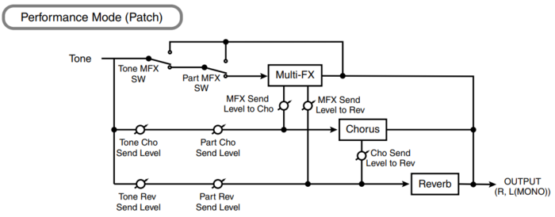

Der Juno-D besitzt nicht gerade wenige Steuermöglichkeiten ("Controller"). Manche können über die Software-Einstellungen verschiedenen Parametern zugeordnet werden und andere nicht.
Die nicht über Software zuordenbaren sind:
Die Bedienungsanleitung zu kennen ist nun Voraussetzung. Die Controller-Informationen sind leider weit verstreut über die Anleitung und nach einem gründlichen Studium der Anleitung bleiben immer noch Fragen offen. Diese sollen hier zum Teil beantwortet werden.
Der Parameter, auf den der D-Beam wirkt, kann direkt gewählt werden, sobald der D-Beam aktiv ist. Die Einstellung bleibt beim Ausschalten erhalten, ohne dass sie extra gespeichert werden muss.
Vorsicht: wählt man als Zielparameter Solo Synth oder Active Expression, dann verlässt man den Assignable-Modus und die Einstellung bleibt nicht erhalten. Wählt man einen anderen Parameter, dann betritt man automatisch den Assignable-Modus. Insgesamt kann man diese Benutzerführung schönstenfalls als "hochkreativ" bezeichnen. Aber welches richtige Musikinstrument ist schon leicht zu beherrschen?
Beim Haltepedal werden Schließer und Öffner unterstützt.
Local Control muss ein sein, damit mit den Reglern und Schaltern am Juno-D überhaupt irgendwelche Parameter gesteuert werden können. Sonst funktioniert nur die Steuerung über MIDI. Auch die nicht über Software zuordenbaren Controller werden durch diese Einstellung beeinflusst.
Modulation Assign bestimmt den Zielparameter des Modulation Controllers. Er heißt also immer "Modulation", kann aber ganz andere Dinge steuern, z.B. die Stärke des Hall-Effekts. Selbiges gilt für den externen Controller, Attack, Decay und Release, die im Menü - wohl um es ein Bisschen spannender zu machen - Pedal, C1, C2 und C3 heißen.
Hinweis: Mit Expression ist immer der Parameter Active Expression gemeint.
Die Controller wirken immer nur auf den ausgewählten Part (grob gesprochen, siehe unten). Bei Part 1 bis 10 leuchten gnädigerweise die LEDs der entsprechenden Knöpfe. Bei Parts 11 bis 16 leuchtet nichts.
Wählt man eine andere Performance, dann leuchtet die LED des Knopfes, der der niedrigeren Dezimalstelle der Performance-Nummer entspricht (auf so eine Idee muss man erst mal kommen!). Der ausgewählte Part bleibt erhalten, auch wenn jetzt ein anderer Knopf leuchten mag. Dies sieht man, wenn man wieder Part Select drückt.
Die ganze Wahrheit: die Controller wirken nicht nur auf den ausgewählten Part, sondern auf alle Parts, die auf dem selben MIDI-Kanal empfangen wie der ausgewählte Part.
Beispiel: Part 2 und 3 empfangen beide auf Kanal 2 (sozusagen ein Dual-Sound realisiert über die Performance-Einstellungen). Wenn Part 2 oder 3 gewählt ist, werden Part 2 und Part 3 von den Controllern gesteuert.

Dieser Abschnitt gilt für den Patch- und den Performance-Modus. Es können je nach gewähltem Effekt-Typ bis zu 2 Parameter durch Controller geregelt werden. Da man an dieser Stelle nicht weiß, welcher Regler das einmal tun wird (z.B. das externe Pedal), heißen sie im Menü Ctrl 1 und Ctrl 2.
Wir können also zum Beispiel insgesamt solche Zuordnungsketten konfigurieren:
Modulation −System-Menü−> MFX Par1 −MFX-Menü−> Rotary Speed
D-Beam −Assignable-Menü−> MFX Par2 −MFX-Menü−> Rotary Level
Das heißt Ctrl 1 ist Modulation und Ctrl 2 ist D-Beam.
Eigentlich wünscht man sich als Musiker, der auf der Bühne steht, Knöpfe auf die man drücken kann, die einem alles fertig einstellen. Für die Patches und Performances trifft das beim Juno-D weitgehend zu, was den Klang betrifft. Natürlich konnte im Performance-Modus nicht jeder Part seine eigenen MFX-Einstellungen bekommen, sonst wäre das Produkt wenigstens doppelt so teuer geworden. Damit fängt die Sound-Tüftelei natürlich an komplizierter zu werden: im Performance-Modus klingen z.B. manche Bässe anders, weil man ihnen den Equalizer wegnehmen muss, den sie als Patch über MFX-Einstellungen mitbringen.
Bei den Controllern ist man vom Ziel weit entfernt. Gerade im Performance-Modus tut dies weh. Zum Beispiel könnte das externe Pedal bei einem Orgel-Part die Rotationsgeschwindigkeit steuern und bei einer anderen Performance die Verzerrer-Stärke eines Gitarren-Part. Leider muss man die Zuordnungen global vornehmen und braucht entsprechend viele Controller. Nur einer davon kann mit dem Fuß bedient werden, und welcher Keyboarder hat beim Spielen ständig eine Hand frei, um einen zweiten Regler damit zu bedienen? Deswegen werden Insekten und Spinnen über kurz oder lang die besseren Musiker stellen.